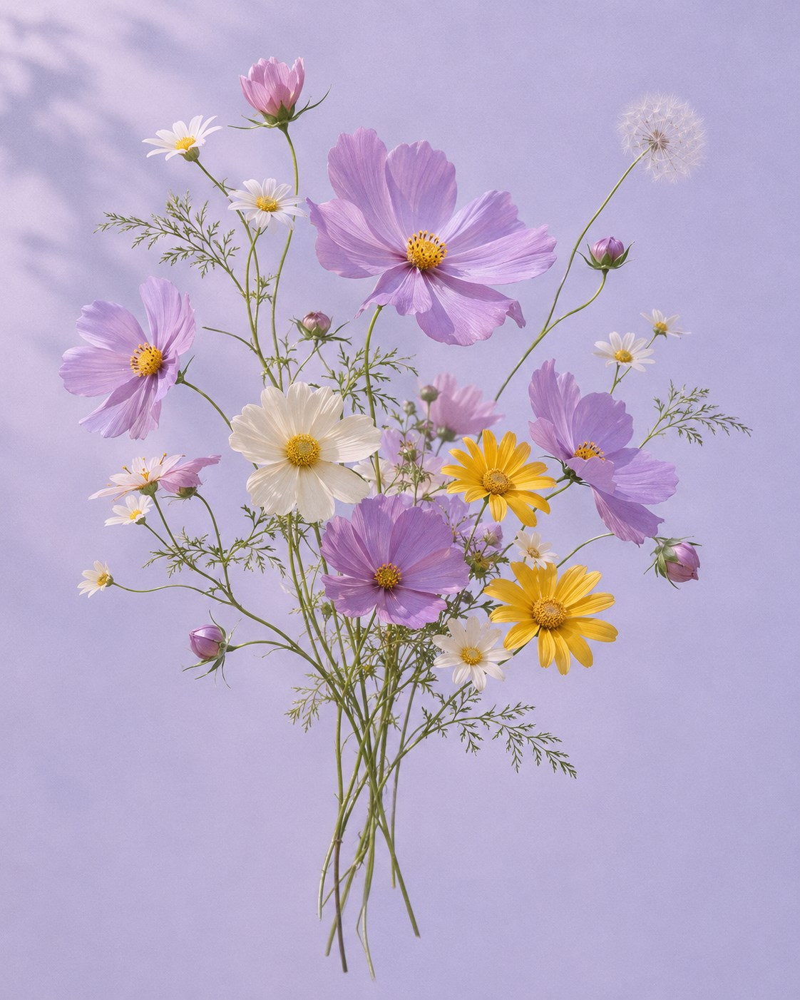

MBTI 식물 성향 테스트
꽃말은
핑계고.
오늘의 당신을 닮은 식물을 찾아보세요.
열여섯 가지 일상 속 선택이
나만의 꽃말로 피어납니다.
16문항 · 약 3분 · 16가지 식물

나의 꽃말을 찾는 중
평소 내 모습에 더 가까운 쪽을 골라 주세요.
나를 닮은 식물
MBTI 식물 성향 테스트
오늘의 당신을 닮은 식물을 찾아보세요.
열여섯 가지 일상 속 선택이
나만의 꽃말로 피어납니다.
16문항 · 약 3분 · 16가지 식물

평소 내 모습에 더 가까운 쪽을 골라 주세요.
나를 닮은 식물